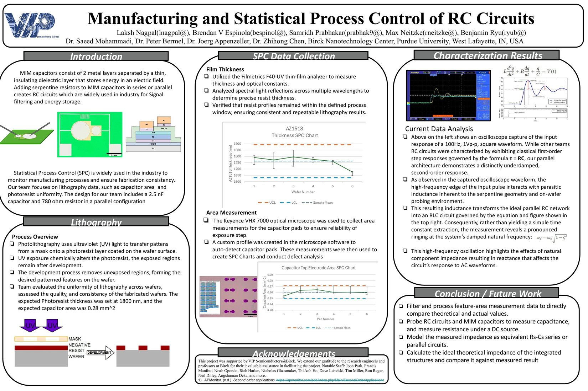
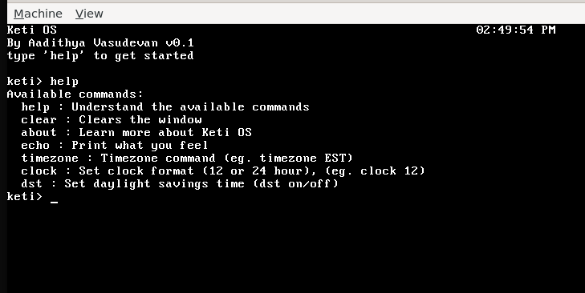
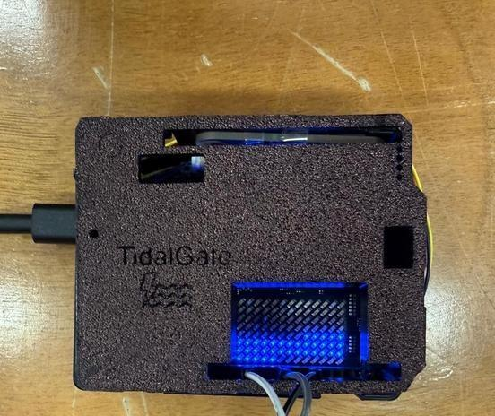
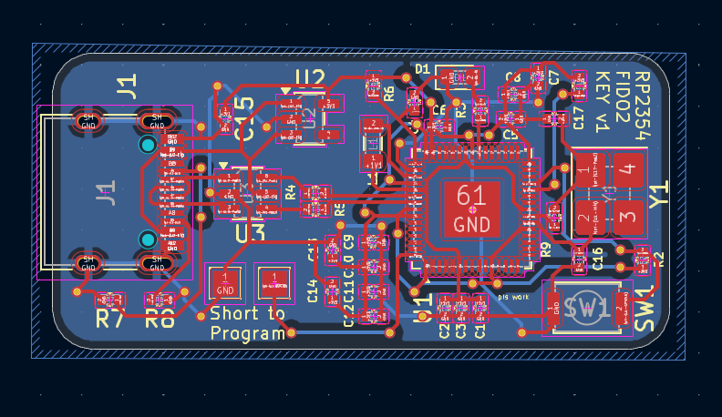
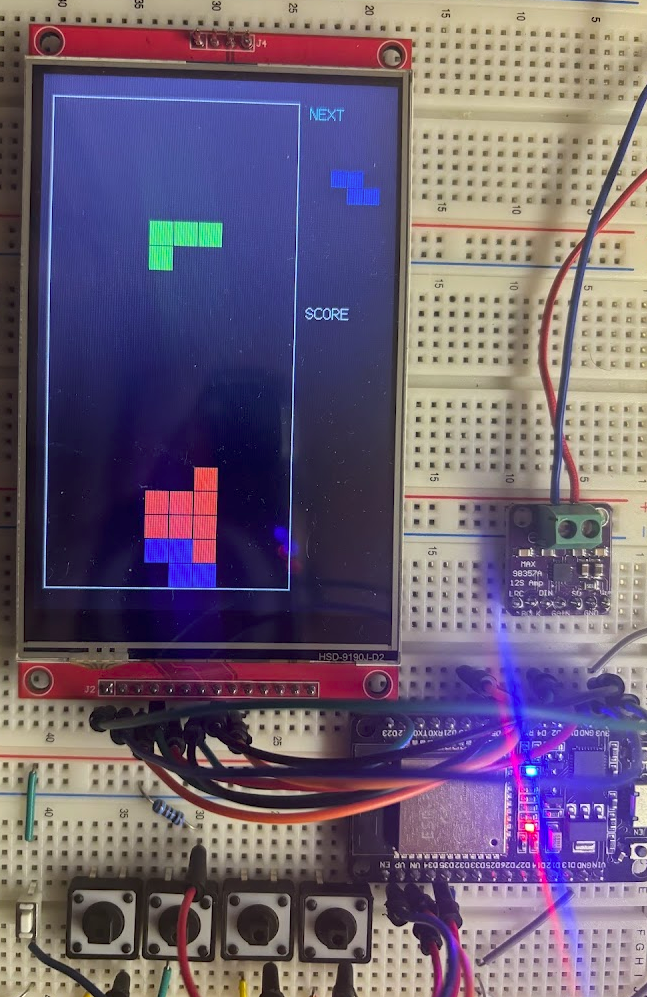
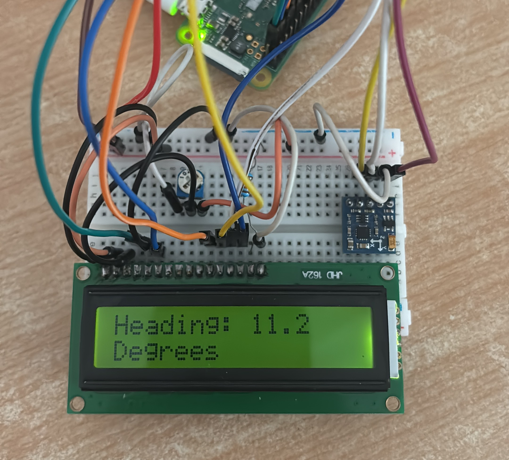
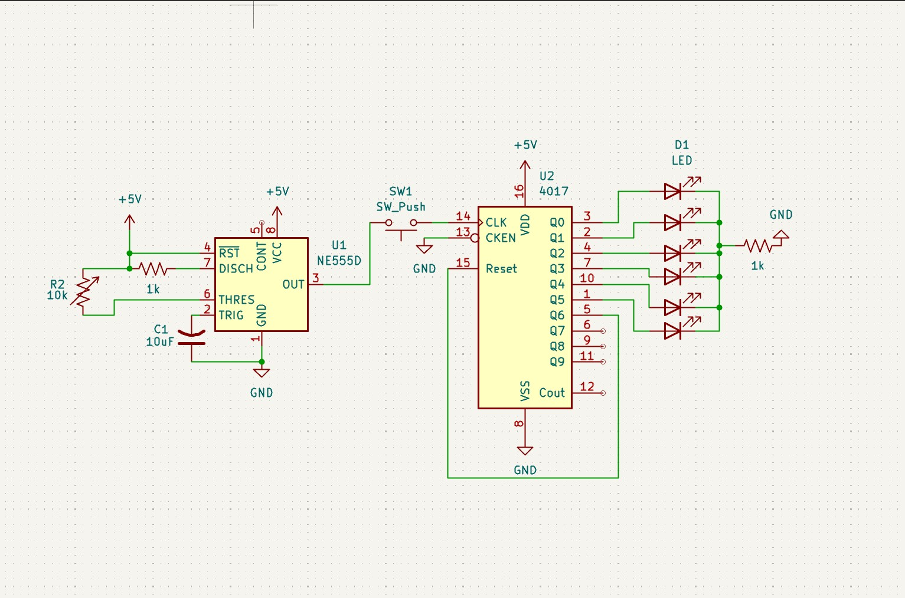

Projects
[ Click any project card to view details ]
In Progress
Leadership & Robotics
Embedded Systems @ Purdue
TARS: Autonomous Mobile Robot
Birck Nanotechnology Center


Completed
🏆 DataHacks '26 @ UCSD

Custom Hardware



